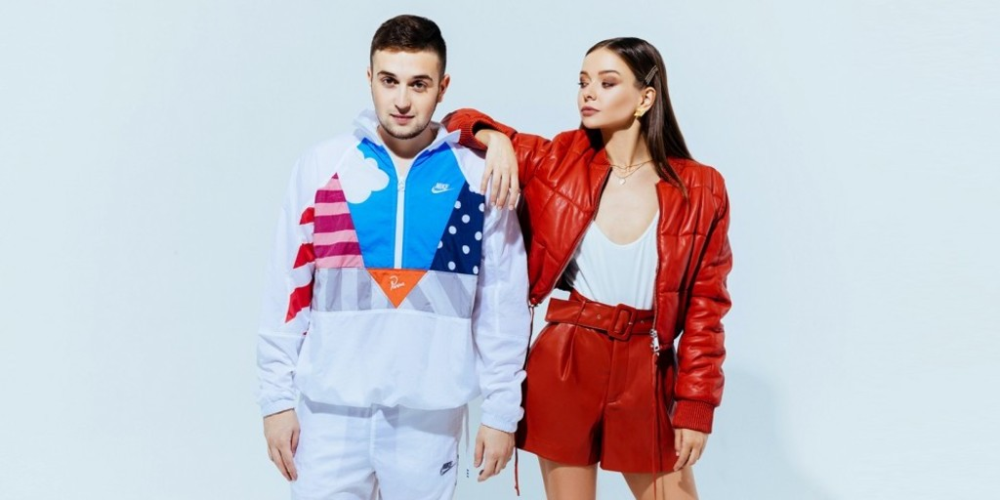

{% extends 'base.html' %}
{% block body %}
    <div class="container mt-5">
        <div id="carouselIndicators" class="carousel slide mb-5" style="max-width: 1024px"
             onresize="makeCorrectImageMargin()">
            <ol class="carousel-indicators">
                <li data-target="carouselItem1" onclick="chooseCarouselImage($(this))"></li>
                <li data-target="carouselItem2" onclick="chooseCarouselImage($(this))" class="active"></li>
                <li data-target="carouselItem3" onclick="chooseCarouselImage($(this))"></li>
            </ol>
            <div class="carousel-inner">
                <div id="carouselItem1" class="carousel-item" data-next="carouselItem2" data-prev="carouselItem3">
                    
                </div>
                <div id="carouselItem2" class="carousel-item active" data-next="carouselItem3"
                     data-prev="carouselItem1">
                    
                </div>
                <div id="carouselItem3" class="carousel-item" data-next="carouselItem1" data-prev="carouselItem2">
                    
                </div>
            </div>
            <a class="carousel-control-prev" href="#" role="button"
               style="opacity: 50%; background-color: #808080" onclick="openOtherImage('prev')">
                <span class="carousel-control-prev-icon" aria-hidden="true"></span>
            </a>
            <a class="carousel-control-next" href="#" role="button"
               style="opacity: 50%; background-color: #808080" onclick="openOtherImage('next')">
                <span class="carousel-control-next-icon" aria-hidden="true"></span>
            </a>
        </div>
        <div style="text-align: center">
            <a href="search">
                <button style="border: solid;border-radius: 25px; background-color: whitesmoke; color:#343a40;
            letter-spacing: 1px; outline: none; padding: 7px 14px 7px 14px"
                        onmouseenter="$(this).css('color', 'whitesmoke').css('background-color', '#343a40')"
                        onmouseleave="$(this).css('color', '#343a40').css('background-color', 'whitesmoke')">
                    Перейти к выбору
                </button>
            </a>
        </div>
    </div>
    <script>
        function chooseCarouselImage(currentElement) {
            if (!currentElement.hasClass('active')) {
                $('.active').removeClass('active');
                currentElement.addClass('active');
                $("#" + currentElement.data('target')).addClass('active');
            }
        }
    </script>
    <script>
        function makeCorrectImageMargin() {
            let $carousel = $('#carouselIndicators');
            let padding = '-' + ((parseInt($carousel.css('max-width')) - parseInt($carousel.css('width'))) / 2) + 'px'
            let $images = $('.carousel-item');
            $images.each(function () {
                $(this).css('margin-left', padding);
            })
        }

        $(window).on('load', makeCorrectImageMargin)
        $(window).on('resize', makeCorrectImageMargin)
    </script>
    <script>
        function openOtherImage(way) {
            let nextImageId;
            if (way === 'next') {
                nextImageId = $('div.active').data('next');
            } else {
                nextImageId = $('div.active').data('prev');
            }
            $('.active').removeClass('active');
            $('li[data-target^="carousel"]').each(function () {
                if ($(this).data('target') === nextImageId) {
                    $(this).addClass('active');
                }
            });

            $('#' + nextImageId).addClass('active');
        }
    </script>
    <script>
        setInterval(function () {
            openOtherImage('next')
        }, 5000)
    </script>
{% endblock %}